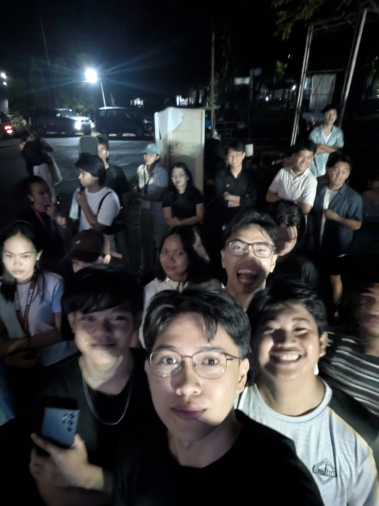
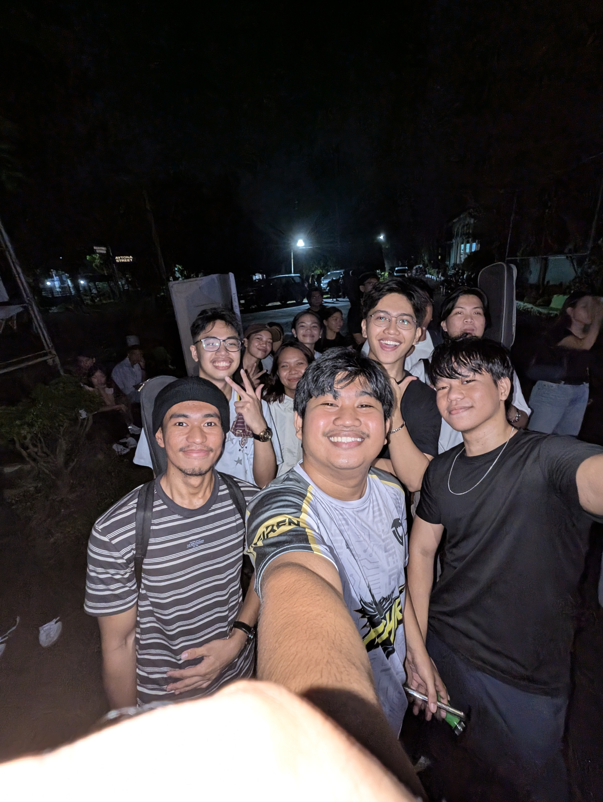
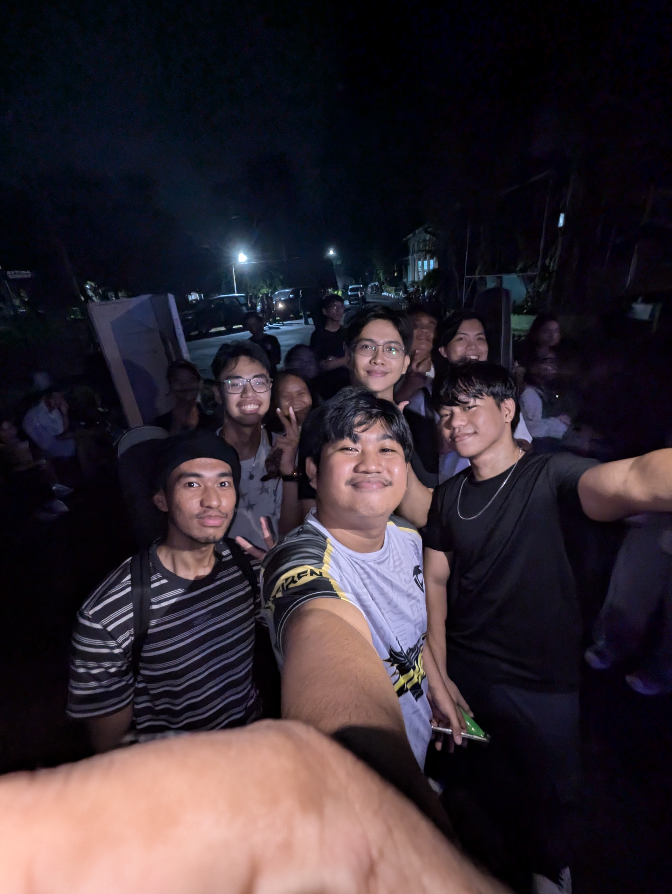
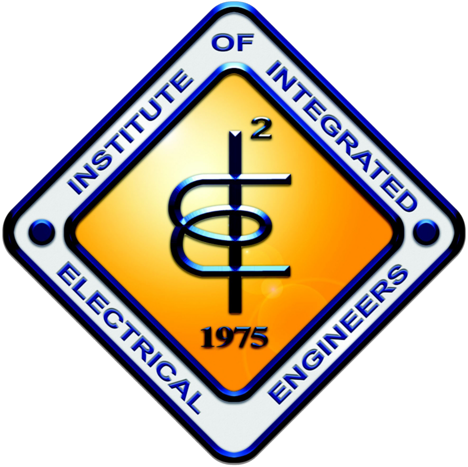

BSEE-3A
Bicol University College of Engineering, Legazpi City, Albay, Philippines, 4500
(SUBSTATION INSPECTION & REMOTE INTERVENTION UTILITY SYSTEM)
Project SIRIUS MK. II was born from a collective vision — to create a system that could inspect and respond to electrical substation conditions without direct human exposure. The group began by identifying the major risks involved in manual inspection, including high-voltage hazards and environmental instability. Early brainstorming sessions led to the conceptualization of a multi-functional robotic unit capable of remote navigation, sensing, and control. We developed preliminary sketches and design flowcharts that mapped out every movement and data feedback process. Throughout this phase, the team emphasized safety, precision, and user-friendly control. The initial design established a solid foundation for the mechanical, electrical, and software components that would follow in later stages.


Once the concept was finalized, the group transitioned into the engineering and integration stage. Each subsystem — mechanical, electrical, and software — was designed to operate harmoniously under a centralized feedback and control system. Sensors such as thermal cameras, gas detectors, and vibration analyzers were integrated to continuously monitor substation environments. The mechanical team constructed a stable platform and robotic arm capable of precise movement and manipulation. Meanwhile, the control logic was programmed into the PLC and microcontrollers to ensure reliable communication between sensors and actuators. This stage required close collaboration, as each component was tested for response time, accuracy, and synchronization. Through constant refinement, the system achieved stable real-time operation.


The final phase of Project SIRIUS MK. II focused on rigorous testing and performance validation. The system was evaluated under controlled substation-like conditions, where simulated gas leaks, abnormal heat levels, and structural vibrations were introduced. Through these tests, the sensors successfully detected anomalies and transmitted data to the main control interface. The robotic arm performed remote interventions such as sample retrieval and visual inspection. Each test iteration improved both system accuracy and operational efficiency. In the end, the project demonstrated a reliable and scalable solution for remote monitoring, capable of reducing human exposure to hazardous environments. The successful demonstration marked a milestone achievement, showcasing the team’s commitment to innovation, safety, and engineering excellence.


Project SIRIUS MK. II represents more than just a technical achievement—it embodies teamwork, innovation, and perseverance. Through months of planning, designing, and testing, the team not only developed an intelligent inspection system but also gained valuable lessons in collaboration and problem-solving. The project demonstrated how modern automation can significantly enhance operational safety and efficiency in electrical substations. Beyond the hardware and programming, it taught the importance of persistence, adaptability, and shared goals. As future engineers, we envision this project as a stepping stone toward smarter, safer, and more sustainable industrial solutions. The experience has strengthened our confidence to take on even greater challenges ahead.
Bicol University College of Engineering, Legazpi City, Albay, Philippines, 4500

Engr. Rogie Mar A. Bolon
Engr. Vincent Domo Diaz
Engr. Melody Mae P. Montas
Institute of Integrated Electrical Engineers
Details and content for Group 1 (Robot Arm) go here.
Details and content for Group 2 (Base) go here.
Details and content for Group 3 (Gas Leak Detector) go here.
Details and content for Group 4 (Thermal Imaging) go here.
Details and content for Group 5 (Vibration Sensor) go here.
Details and content for Group 6 (Environmental Monitoring) go here.